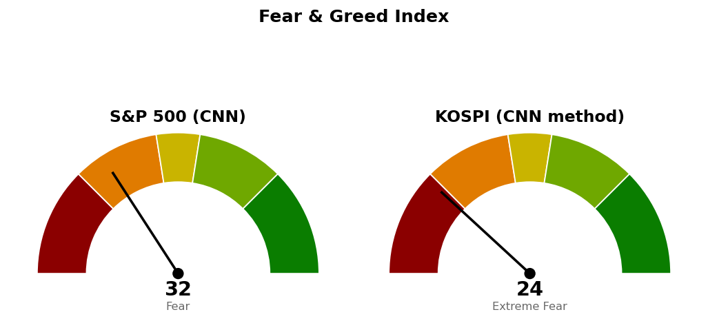

2026-11-09 장전 예측 4건: 4건 중 4건 적중(100.0%)
| 예측 | 근거 | 실제 | 판정 |
|---|---|---|---|
| S&P 500 종가 7,400 상회 | 기준선 7,400 — 11/6 종가 7,377(장중 7,444), S&P 500 선물 +0.98% 7,474, 변동성지수 23.23(-9.40%) | 종가 7,550 (+2.35%) | 적중 |
| 나스닥 종합 장중 저가가 24,500 위 유지 | 다음 지지 24,500 — 11/6 종가 24,579·저가 24,508, 나스닥100 선물 +1.01% | 저가 24,763 | 적중 |
| Invesco QQQ 종가 663 상회 | ETF 스윙 진입선 663 — 11/6 종가 656.10(+1.05% 거리), 나스닥100 선물 +1.01% | 종가 679 (+3.54%) | 적중 |
| 헬스케어 (XLV), S&P 500 대비 약세 마감 | 20일 초과수익 1위(+13.75%)지만 11/6 지수 상승일 1일 초과수익 -0.37%, 오늘 S&P 500 선물 +0.98%·변동성지수 -9.40% | +1.91% 대 S&P 500 +2.35% | 적중 |
US 최근 90일 누적 67건 중 52건 적중(77.6%) · 최근 20건 20건 중 17건 적중(85.0%)
빗나간 예측은 없습니다. 누적 기준 종류별로는 섹터 강세(지수 대비 강세 마감) 예측이 14건 중 6건(42.9%)으로 가장 낮습니다.
직전 시황은 11/9 미국 장전 회차이며, 가격은 11/6 미국 마감 후 회차가 등록한 값입니다. 틀린 판단은 없었습니다.
| 직전 가격 | 판정 방식 | 11/9 결과 | 판정 |
|---|---|---|---|
| 나스닥 기준선 25,131 | 일봉 종가 상회 | 종가 25,253 | 충족 |
| 나스닥 도착지 25,500 | 장중 고가 도달 | 고가 25,354 | 미충족 · 146포인트 아래에서 멈춤 |
| 나스닥 다음 지지 24,500 · 취소선 24,262 | 일봉 종가 하회 | 저가 24,763 · 종가 25,253 | 미충족 · 사다리 유지 |
| S&P 500 기준선 7,400 | 일봉 종가 상회 | 종가 7,550 | 충족 |
| S&P 500 도착지 7,470 | 장중 고가 도달 | 고가 7,577 | 충족 |
| S&P 500 다음 지지 7,300 · 사다리 7,314 · 7,113 | 종가 하회 / 장중 저가 도달 | 저가 7,422 | 미충족 · 사다리 미집행 |
| S&P 500 200일선 | 일봉 종가 하회 | 종가 7,550 · 200일선 7,328 | 미충족 · ETF 진입 가능 |
| QQQ 663달러 | 일봉 종가 상회 | 종가 679.35달러 | 충족 · 진입 |
| XLV 190 · XLP 94.21 · XLE 70.80달러 | 일봉 종가 상회 | 188.33 · 90.89 · 61.94달러 | 미충족 · 진입 없음 |
20일선·50일선은 지수이동평균입니다. 경로를 말할 근거가 없어 방향을 말하지 않고 기준선과 두 갈래만 냅니다. 사다리는 지수 포인트로만 적습니다.
기준선과 다음 지지 모두 한 세션 안에 닿는 거리이고, 기준선 25,685와 도착지 25,803 사이는 118포인트(하루 평균 변동폭의 0.22배)입니다. 나스닥은 200일선 위로 돌아왔고(+0.58%), 사다리는 남은 회차가 없으며 두 회차 평가손익은 계좌 +0.08%입니다. 180일 박스(21,425~27,401) 안쪽 판정은 중립(지지 테스트 거래량 혼조, 저점 절하, 상승봉 대 하락봉 거래량비 1.02)입니다.
기준선과 다음 지지 모두 한 세션 안에 닿는 거리입니다. 11/9 고가 7,577은 10번 반응한 가격대 하단 7,578 바로 아래에서 멈췄습니다. 180일 박스(6,475~7,828) 안쪽 판정은 중립(지지 테스트 매도 거래량 감소, 저점 절하, 거래량비 1.00)입니다. 현재가는 진입 자리가 아니며, 사다리 1차 7,314까지 기다립니다.
S&P 500 7,550이 200일 이동평균 7,328 위(+3.03%, 4/8부터)라 새 계획을 낼 수 있는 국면입니다.
| ETF | 등록일 | 현재 | 진입 | 손절 | 목표 | 상태 |
|---|---|---|---|---|---|---|
| Invesco QQQ (QQQ) | 2026-11-06 | 679 | 663 | 640 | 702 | 보유 중 (진입 2026-11-09) |
| 에너지 (XLE) | 2026-10-20 | 61.94 | 70.80 | 68.87 | 74.54 | 진입 대기 |
| 필수소비재 (XLP) | 2026-10-23 | 90.89 | 94.21 | 92.40 | 99.40 | 진입 대기 |
| 헬스케어 (XLV) | 2026-11-07 | 188 | 190 | 179 | 207 | 진입 대기 |
새 계획은 XLY와 XLV 두 개입니다. XLV는 진입 전인 기존 계획을 대체하며, 위 표의 179달러는 대체 전 값입니다.
XLY는 모멘텀형(저항을 돌파하면 그 방향이 이어진다는 전제)이지만 집행은 135달러 고정 목표 전량 매도이며 트레일링은 걸지 않습니다. 조건 점검 9개를 모두 채웠습니다(지수 대비 20일 초과수익 +11.08%, 상대강도선 60일 신고가). 진입과 목표 사이에 1/12 고점 125.01달러가 있습니다. 계좌 1% 위험 기준 비중 41.4%를 13% 상한으로 제한하며 119달러 손절 시 계좌 -0.31%입니다. 손절 폭은 진입가의 2.42%(하루 평균 변동폭의 1.20배)라 하루 평균 움직임에는 체결되지 않습니다.
XLV도 모멘텀형이며 집행은 207달러 고정 목표 전량 매도입니다. 조건 점검은 9개 중 8개를 채웠고 미달은 상대강도선 신고가입니다. 손절 근거가 직전 180.00~180.48달러 구간에서 184.00~185.11달러 구간으로 올라가 손절을 179달러에서 183달러로 옮겼고, 손익비는 직전 1:1.56 (손절 3.03 ATR)에서 높아졌습니다. 현재가 188.33달러는 저항 190달러 바로 아래라 현재가 추격 비권장이며, 진입은 190달러 종가 상회로만 합니다. 비중 27.5%를 13% 상한으로 제한하며 183달러 손절 시 계좌 -0.47%입니다. 손절 폭은 진입가의 3.63%(하루 평균 변동폭의 1.90배)입니다.
상위 2개는 헬스케어 · 임의소비재이며, 필수소비재가 2위에서 3위로 내려갔습니다. 11/9 하루는 산업재 +3.82%, 기술 +3.73%가 가장 강했고 에너지 +0.52%가 가장 약했습니다.
종목 발굴: 200개를 훑어 1차 23개, 구조 판정 12개 중 3개가 남았습니다(거래대금 미달 98개, 추세 미달 49개, 52주 고점 대비 위치 벗어남 17개, 지수 대비 상대강도 미달 8개, 최근 리포트가 나간 종목 5개, 추격 비권장 2개, 박스 판정 불가 1개 등 탈락). 1순위 머크 (MRK)는 이 브리핑 뒤에 배치가 정식 리포트를 씁니다. 페라리 (RACE)와 리제네론 (REGN)은 후보이며 리포트가 아닙니다 — 텔레그램으로 종목명을 보내면 리포트가 나갑니다.
| 항목 | 값 | 직전 대비 |
|---|---|---|
| 미국 경기선행지수 | 101.00 (9월) | 전월 대비 +0.05 · 직전 회차와 같은 값 |
| 한국 경기선행지수 | 102.53 (9월) | 전월 대비 -0.13 · 직전 회차와 같은 값 |
| 미 10년 명목금리 | 확정 4.86% (11/6) · 지수 시세 4.864% (11/9) | 확정 +0.02%포인트 · 시세 +0.005%포인트 |
| 미 10년 기대물가 | 2.23% (11/6) | -0.01%포인트 |
| 미 10년 실질금리 | 2.63% (11/6) | +0.03%포인트 |
| 유가 (WTI) | 확정 99.64달러 (11/3) · 선물 86.37달러 (11/9) | 확정 갱신 없음 · 선물 -4.91% |
| 달러지수 (광의) | 121.88 (11/6) | +0.37 |
| 변동성지수 (VIX) | 19.92 (11/9, 장중 19.64~25.08) | 전일 25.64 · -22.31% · 백분위 산출물 없음 |
경기선행지수는 장기 평균을 100으로 놓고 경기 방향을 몇 달 앞서 보여주는 OECD 지표이며, 새 발표가 없어 해석을 바꾸지 않습니다. 11/6 실질금리 상승(+0.03%포인트)과 달러지수 상승은 방향이 일치합니다. 11/9 WTI 선물 -4.91%와 같은 날의 기대물가는 아직 값이 없어 대조하지 못했습니다. 이 절은 지수 기준선에 반영하지 않습니다.

S&P 500은 CNN 공식값이며 1주 전 19.4, 1개월 전 43.5였습니다. 가장 낮은 항목은 안전자산 선호 5.4, 모멘텀 13.8, 풋/콜 비율 17.4이고 가장 높은 항목은 변동성 50.0입니다. 코스피는 CNN 방식을 한국 데이터로 재구성한 값이며 공식 지수가 아닙니다. 일곱 항목을 모두 썼고 기준일은 11/9이며, 가장 낮은 항목은 모멘텀 1.6, 변동성 4.8이고 가장 높은 항목은 풋/콜 비율 72.8입니다.
| 날짜 (미국) | 이벤트 | 확인할 것 |
|---|---|---|
| 11/10 | 소비자물가지수(CPI) | 나스닥 25,685 · 25,131, S&P 500 7,649 · 7,529 대비 종가 |
| 11/12 | 신규 실업수당 청구 | 고용 · 금리 시세 |
1. 매수 쪽 — 지수는 지금 가격에 살 자리가 없습니다. 나스닥은 남은 회차가 없고, S&P 500은 장중 저가로 7,314에 닿으면 계좌의 2%, 7,113에 닿으면 계좌의 2%를 매수합니다. 2. 나스닥은 일봉 종가 24,262 아래면 매수 계획 종료이고, 1차(25,131) · 2차(24,425)를 다음 세션에 전량 매도 (사다리 취소)합니다. 3. S&P 500은 일봉 종가 7,100 아래면 매수 계획 종료이고, 산 회차를 다음 세션에 전량 매도 (사다리 취소)합니다. 4. QQQ 보유 중 — 640달러 장중 도달 시 전량 매도 (손절), 702달러에서 전량 매도 (목표 도달). 5. XLY 진입 대기 — 일봉 종가 122달러 상회 시 계좌의 13% 이내로 진입, 119달러 장중 도달 시 전량 매도 (손절), 135달러에서 전량 매도 (목표 도달). 6. XLV 진입 대기 — 일봉 종가 190달러 상회 시 계좌의 13% 이내로 진입, 183달러 장중 도달 시 전량 매도 (손절), 207달러에서 전량 매도 (목표 도달). 7. XLP 진입 대기 — 일봉 종가 94.21달러 상회 시 진입, 92.40달러 장중 도달 시 전량 매도 (손절), 99.40달러에서 전량 매도 (목표 도달). XLE 진입 대기 — 70.80달러 / 68.87달러 / 74.54달러. 8. S&P 500이 일봉 종가로 200일선 7,328 아래면 위 ETF 계획의 신규 진입을 보류합니다. S&P 500 사다리에는 적용하지 않습니다.
다음 세션에 볼 것 — 소비자물가지수 발표일에 S&P 500이 일봉 종가로 7,529를 지키는지입니다.
ATR(하루 평균 변동폭): 최근 14일 하루 가격 변동폭의 평균.
지수이동평균: 최근 가격에 더 무게를 둔 평균.
상대강도지수(RSI): 최근 14일 상승폭과 하락폭의 비율로 과열·침체를 보는 0~100 지표.
트레일링: 가격이 오르는 만큼 손절선을 따라 올리는 청산 방식.
VIX: S&P 500 옵션 가격에서 뽑은 향후 30일 예상 변동성.